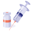
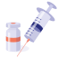

RTSL Styleguide
These simple brand style guidelines and downloadable assets are here to help you when creating new projects.
Logo
Which logo should I use?
The first instance of the RTSL logo should always have the 'An Initiative of Vital Strategies' strapline. Subsequent uses and smaller versions can use the logo on it's own.
There are two colour types, and a few file formats to choose from, when you need a logo. Which one you choose depends on the context:
- For viewing on a screen (Website, Email, Social Media Post etc) or Microsoft Word and Powerpoint documents, use the RGB version. This includes documents that will be printed by the recipient (e.g on an inkjet printer). Use the SVG format to retain quality.
- For professional printing, use the CMYK version, and either an EPS or PDF format to ensure quality.
However, some applications and contexts (such as Mailchimp) don’t allow you to use any of these formats. In these cases a PNG will give you the best results. Never use a JPEG or BMP logo as the quality will be poorer.
Drag and drop the relevant logo to your document:
| Strapline | No Strapline | |||
|---|---|---|---|---|
| RGB for Screens | SVG | |||
| PNG | ||||
| SVG (White-out) |
||||
| CMYK for Printing | EPS |
These are also available as part of the Powerpoint Template.
Colour
The RTSL colour palette uses two main colours (RTSL Red and RTSL Blue), with tints of these used for backgrounds. RTSL Accent is used sparingly to highlight elements, while RTSL Soft Black is for body text. Infographics use an extended colour palette.
Colour values shown are CSS variables and CMYK, HSL and HEX Values.
Main palette
RTSL Blue
| CSS | --rtsl-blue |
|---|---|
| CMYK | C100, M98, Y16, K50 |
| HSL | 236°, 49%, 33% |
| HEX | #2B307F |
RTSL Red
| CSS | --rtsl-red |
|---|---|
| CMYK | C0, M67, Y65, K0 |
| HSL | 11°, 86%, 66% |
| HEX | #F3775C |
RTSL Soft Black
| CSS | --rtsl-soft-black |
|---|---|
| CMYK | C80, M20, Y20, K80 |
| HSL | 143°, 92%, 14% |
| HEX | #0D4A59 |
RTSL Accent
| CSS | --rtsl-accent |
|---|---|
| CMYK | C3, M36, Y81, K0 |
| HSL | 35°, 86%, 62% |
| HEX | #f2ad4c |
Colour Tints
These tints can be extended with further steps inbetween.
RTSL Blue
| CSS | --rtsl-blue |
|---|---|
| CMYK | C100, M98, Y16, K50 |
| HSL | 236°, 49%, 33% |
| HEX | #2B307F |
RTSL Blue 1
| CSS | --rtsl-blue-1 |
|---|---|
| CMYK | C65, M60, Y0, K0 |
| HSL | 236°, 49%, 60% |
| HEX | #676FCB |
RTSL Blue 2
| CSS | --rtsl-blue-2 |
|---|---|
| CMYK | C29, M27, Y0, K0 |
| HSL | 236°, 45%, 78% |
| HEX | #AEB1E0 |
RTSL Blue 3
| CSS | --rtsl-blue-3 |
|---|---|
| CMYK | C12, M11, Y0, K0 |
| HSL | 236°, 45%, 90% |
| HEX | #DADCF1 |
RTSL Blue 4
| CSS | --rtsl-blue-4 |
|---|---|
| CMYK | C5, M5, Y0, K0 |
| HSL | 236°, 40%, 95% |
| HEX | #EEEEF8 |
RTSL Soft Black
| CSS | --rtsl-soft-black |
|---|---|
| CMYK | C92, M60, Y49, K33 |
| HSL | 192°, 75%, 20% |
| HEX | #0D4A59 |
RTSL Soft Black 1
| CSS | --rtsl-soft-black-1 |
|---|---|
| CMYK | C75, M34, Y33, K3 |
| HSL | 192°, 30%, 43% |
| HEX | #4E838F |
RTSL Soft Black 2
| CSS | --rtsl-soft-black-2 |
|---|---|
| CMYK | C30, M11, Y16, K0 |
| HSL | 192°, 25%,75% |
| HEX | #B0CACF |
RTSL Soft Black 3
| CSS | --rtsl-soft-black-3 |
|---|---|
| CMYK | C9, M4, Y6, K0 |
| HSL | 192°, 10%, 90% |
| HEX | #e3e7e8 |
Projects
PE Green
| CSS | --pe-green |
|---|---|
| CMYK | C75, M0, Y100, K0 |
| HSL | 128°, 52%, 47% |
| HEX | #3bbc53 |
PE Soft Black
| CSS | --pe-soft-black |
|---|---|
| CMYK | C73, M69, Y56, K59 |
| HSL | 240°, 8%, 419% |
| HEX | #2D2D35 |
RTSL palette assets
Typography
RTSL uses the open-source font HK Grotesk:
Embedding HK Grotesk
As HK Grotesk is open-source, it's license allows us to embed the font in documents such as PDFs.
The brand font can be embedded within Word and Powerpoint documents if the TrueType version is used. Under Preferences > Output and Sharing > Save make sure 'Embed fonts in the file' is checked.
For use online, .woff versions are also available. Embed via the hk-grotesk.css stylesheet.
Typography rules (Screen)
Heading 1 (3.875rem)
Heading 2 (1.625rem)
Heading 3 (1rem, Uppercase, 0.1rem tracking)
Body text for RTSL starts with a base font size of 16px. The baseline grid/line height is set to 26px (16 × 1.6). Headings are sized similarly using a scale of 1.6. Type size is set to automatically enlarge as the viewport expands using this rule:
html { font-size: calc(1rem + 0.15vw);}
By having all type sizing and spacing specified in ems, they will increase proportionally.
For web use, the basic typography rules can be found in the typography.css file, which is separate from any style rules used just for this guide.
Type Example
We are a global public health initiative with one mission: save lives
We are funders and implementers
We provide catalytic funding to countries interested in improving epidemic preparedness or their citizens’ heart health. And, we staff the world’s leading experts in cardiovascular health and epidemic preparedness, so that we can send them into the field to provide on-the-ground technical assistance.
We operate in dozens of countries
Our focus is on accelerating action through speed, simplicity, and scale in low- and middle-income countries. We work primarily through our partners’ country offices.
Global implementing partners
Our global partners include: World Health Organization, CDC Foundation, Global Health Advocacy Incubator, Johns Hopkins Bloomberg Sschool of Public Health, World Bank, Vital Strategies
In-country partners
Our in-country partners include: Pan American Health Organization (PAHO), Beijing Lisheng Cardiovascular Health Foundation (BLCHF), African Field Epidemiology Network (AFENET), PATH, National Heart Foundation of Bangladesh
Templates
The Powerpoint Template embeds the brand typeface HK Grotesk, colour theme and also contains Logos and assets from the Visual Library. It is intended to give you a good starting point when creating a new slide deck.
Current Template Version: 07 (28th March 2019)
Visual Library
These assets are supplied as SVG files in RGB colour mode, making them suitable for both screen contexts and embedding in Word and Powerpoint documents. They are also available as part of the Powerpoint Template. Contact RTSL Design if you need these supplied in another format
Rules
Rules are used to either separate content, add focus to the start of a heading (for example, in the <h1> style) or used boldly as the top border of a page. They are intended to echo the Resolve to Save Lives logo.
| 20pt | |
|---|---|
| 10pt | |
| 5pt | |
| 2pt |
Icons

Mini-Illustrations
 

Assets
These assets are linked to in their relevant section, but also repeated here as complete list: